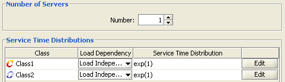
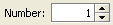
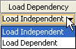
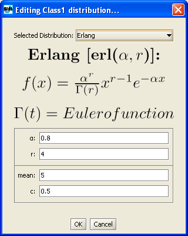
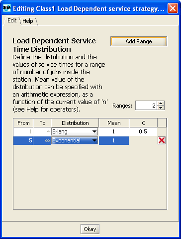

How to Define the Service Strategy
_________________
This section is present in server and delay stations.
This section allows the specification of the number of servers, for server stations, and the service time distribution, for both server and delay stations.
Delay stations are infinite servers with identical service time, therefore they only need the service time distribution. The infinite number of servers provides for equal average response time for all jobs, as no job waits in queue for service.
In this section, the load dependent or independent nature of the service time is also specified for each class in server stations:

The number of servers in a server station can be modified using the corresponding input area:

For each class, you must specify whether the service time is Load Dependent or Load Independent using this menu:

A load independent service indicates that, regardless of the number of jobs that are in the station, the system will serve all jobs following a fixed policy modelled by the chosen statistical distribution.
For each class, the Service Time Distribution is set to Exponential with average equal to 1. It can be modified by clicking the button and inserting all the required parameters from this window:

Click the drop down menu and choose the service time distribution among the following:
A load dependent service time indicates that the amount of time the server spends with each customer depends upon the current number of customers in the station. A set of intervals for the number fo jobs in the station is specified, either by adding one range at a time via the button or by specifying the total number at once. Each range must them be specified by its lower (From) and upper (To) extremes. Each such range can be associated with different service times, as for the distribution, the mean and the coefficient of variation, or a subset thereof.
To set the parameters of a Load Dependent service time, click the button and then specify the parameters for each added range.

For each customer number range you must specify the following parameters:
Distribution: you can choose among Pareto, Erlang, Exponential, Hyperexponential, Poisson, Uniform, Constant, Gamma and Normal distribution.
Mean: the mean value of each distribution is specified in the "Mean" form by double clicking on it. Insert a number or an arithmetic expression that will be evaluated with JFEP - Java Fast Expression Parser by Bertoli Marco. For a complete list of the command supported by JFEP you can read the "Help" tab or see the official JFEP web site at http://jfep.sourceforge.net/
C: The coefficient of variation of each distribution (when C exist) can be specified by double clicking on the "C" form. For example, in the previous picture two policies are defined:
From 1 to 4 jobs in the station, the server will behave according to an Erlang distribution with mean = 1 and C = 0.5. For any number of jobs greater or equal to 5 in the station, the system will behave according to an Exponential distribution with mean = 1.
If you want to delete a range click .